Samples LAS points read-only, suppresses extreme coordinate outliers with percentile bounds, and generates plan and elevation density views. No Autodesk runtime, source modification, registration, or coordinate transformation is used.
Decision boundary: percentile geometry is a triage aid—not a survey, registration, or dimensional certification. Final floor-plan work still requires compatible point-cloud/CAD review and human validation.
Session
Points
Core extent X × Y × Z
XY inflation
Z inflation
Outside core
Flag
20260710222318
3,772,526
8.615 × 7.559 × 2.570
1.50
1.43
5.70%
low
20260710222414
5,164,456
9.801 × 9.271 × 2.718
4.31
1.56
5.82%
moderate
20260710223037
42,131,618
106.490 × 34.119 × 14.067
7.73
4.04
5.27%
moderate
20260710222125
12,940,403
18.816 × 9.118 × 6.013
43.09
10.13
5.52%
high
20260710222718
27,679,943
45.667 × 41.165 × 10.477
12.84
5.87
4.85%
high
Scan session
20260710222318
low outlier inflation
Points3,772,526
Sample1,886,263
Core XYZ8.615 × 7.559 × 2.570
Robust density57,931.212
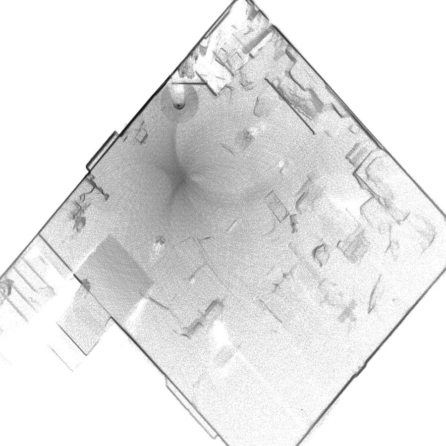
Plan-density view — P0.5 to P99.5
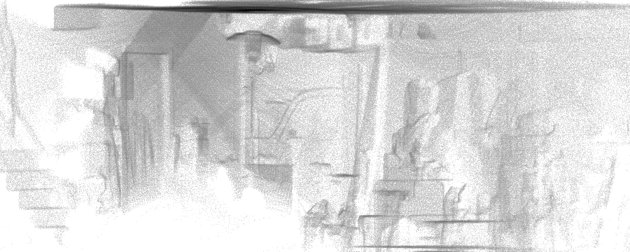
X/Z density view
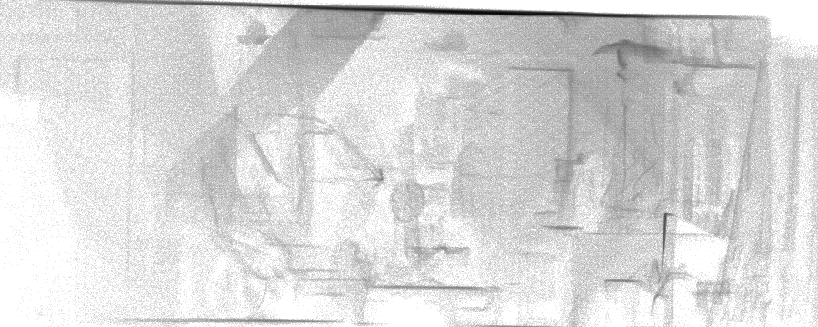
Y/Z density view
Raw XYZ extent
10.682 × 9.150 × 3.684
Core XYZ extent
8.615 × 7.559 × 2.570
XY inflation ratio
1.50×
Z inflation ratio
1.43×
Median XYZ
-0.278, -0.046, 0.924
Interpretation
Use the density views to identify likely building coverage. Do not infer dimensions or registration from this report alone.
Scan session
20260710222414
moderate outlier inflation
Points5,164,456
Sample1,721,489
Core XYZ9.801 × 9.271 × 2.718
Robust density56,836.537
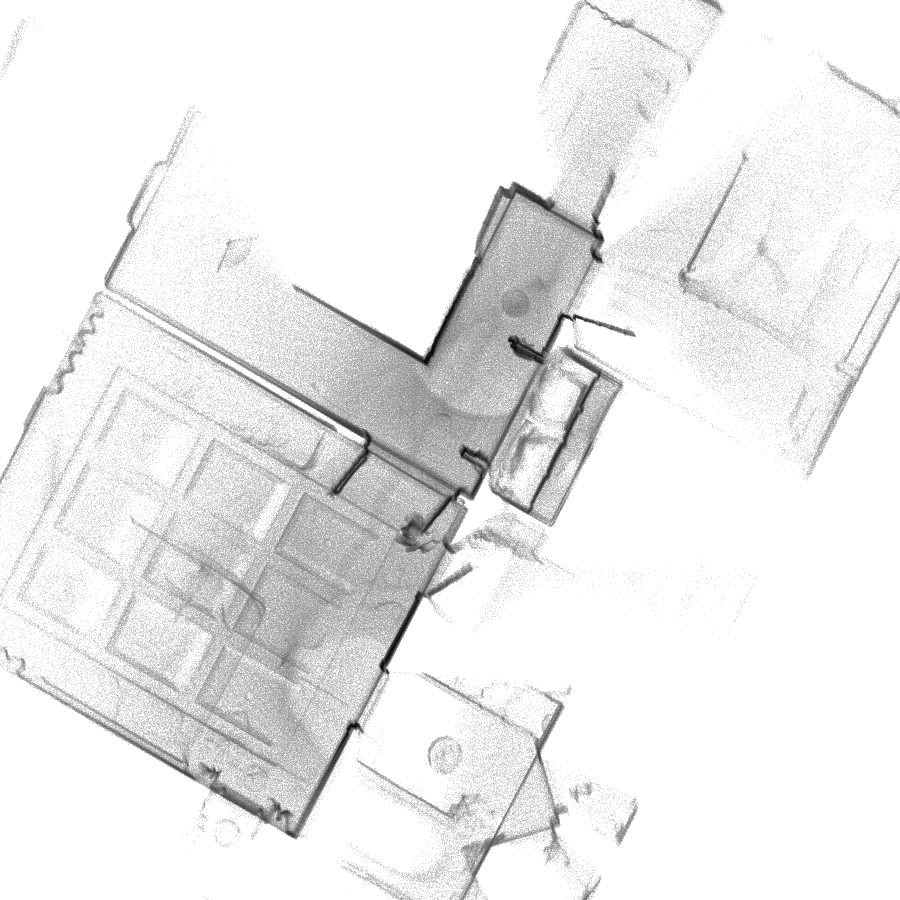
Plan-density view — P0.5 to P99.5
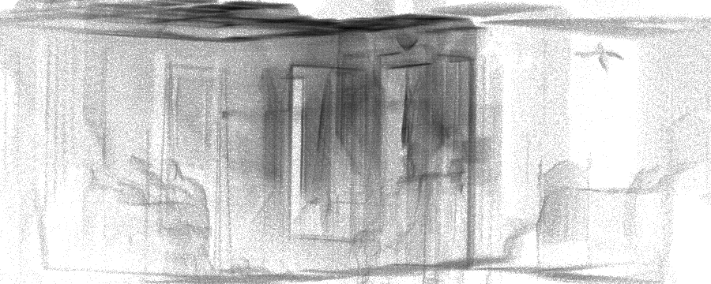
X/Z density view
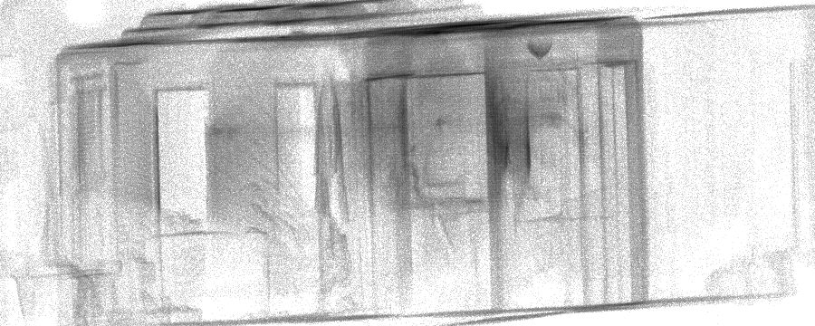
Y/Z density view
Raw XYZ extent
17.823 × 21.963 × 4.245
Core XYZ extent
9.801 × 9.271 × 2.718
XY inflation ratio
4.31×
Z inflation ratio
1.56×
Median XYZ
-0.052, -0.449, 0.493
Interpretation
Use the density views to identify likely building coverage. Do not infer dimensions or registration from this report alone.
Scan session
20260710223037
moderate outlier inflation
Points42,131,618
Sample1,915,093
Core XYZ106.490 × 34.119 × 14.067
Robust density11,595.826
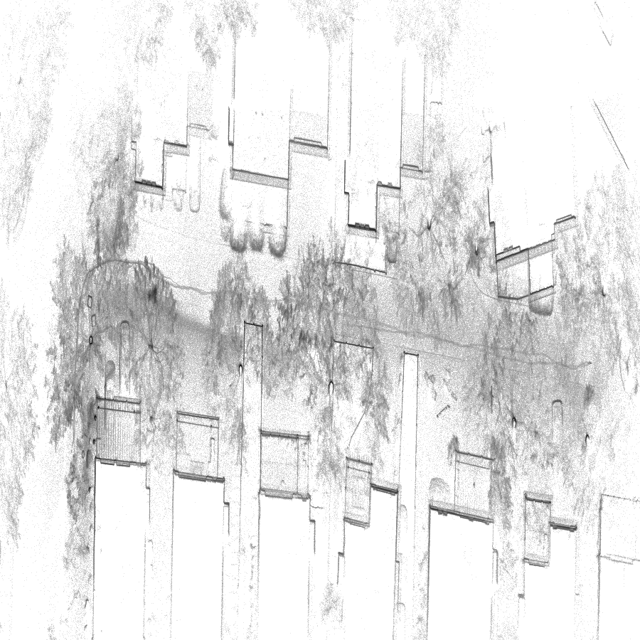
Plan-density view — P0.5 to P99.5
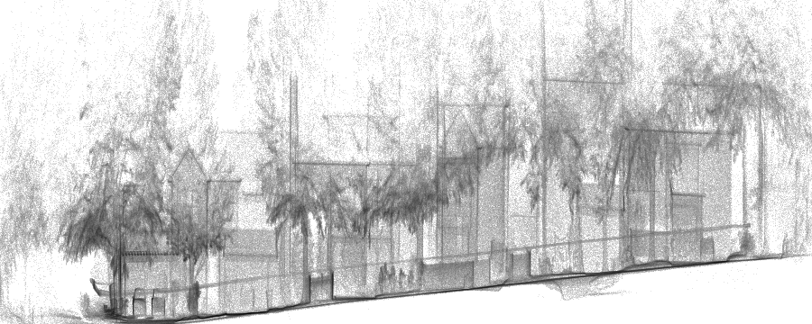
X/Z density view
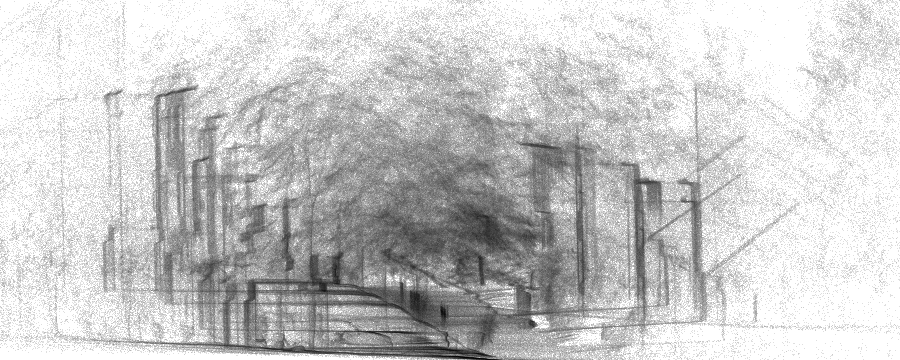
Y/Z density view
Raw XYZ extent
170.530 × 164.661 × 56.868
Core XYZ extent
106.490 × 34.119 × 14.067
XY inflation ratio
7.73×
Z inflation ratio
4.04×
Median XYZ
38.920, 8.760, 2.959
Interpretation
Use the density views to identify likely building coverage. Do not infer dimensions or registration from this report alone.
Scan session
20260710222125
high outlier inflation
Points12,940,403
Sample1,848,640
Core XYZ18.816 × 9.118 × 6.013
Robust density75,429.197
Plan-density view — P0.5 to P99.5
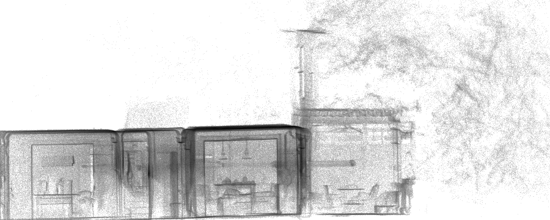
X/Z density view
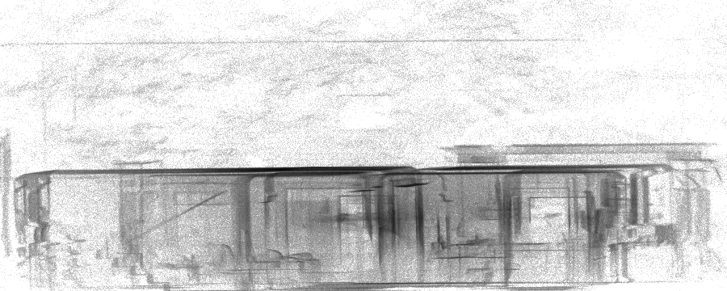
Y/Z density view
Raw XYZ extent
107.840 × 68.552 × 60.887
Core XYZ extent
18.816 × 9.118 × 6.013
XY inflation ratio
43.09×
Z inflation ratio
10.13×
Median XYZ
-0.476, 0.616, 0.684
Interpretation
Use the density views to identify likely building coverage. Do not infer dimensions or registration from this report alone.
Scan session
20260710222718
high outlier inflation
Points27,679,943
Sample1,977,151
Core XYZ45.667 × 41.165 × 10.477
Robust density14,724.477
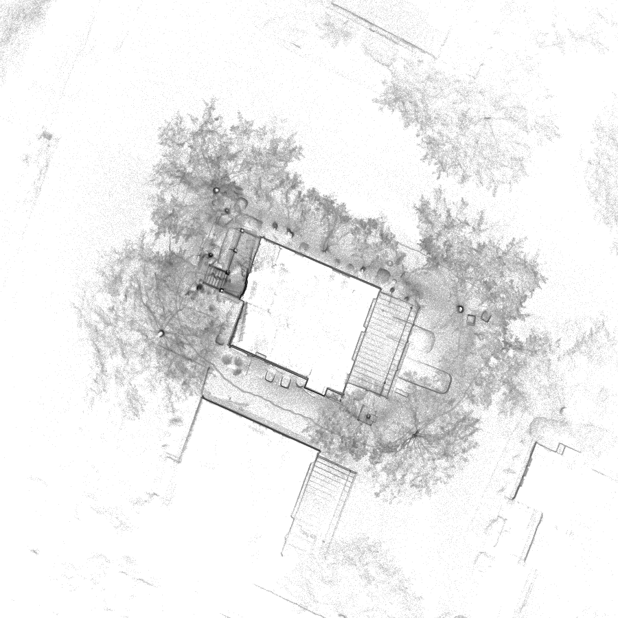
Plan-density view — P0.5 to P99.5
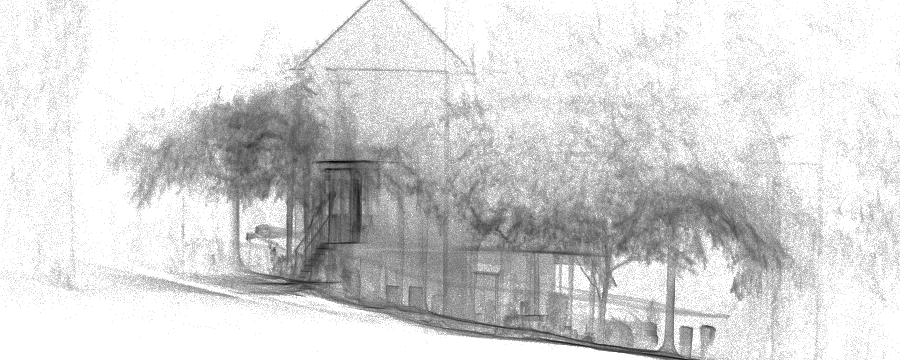
X/Z density view
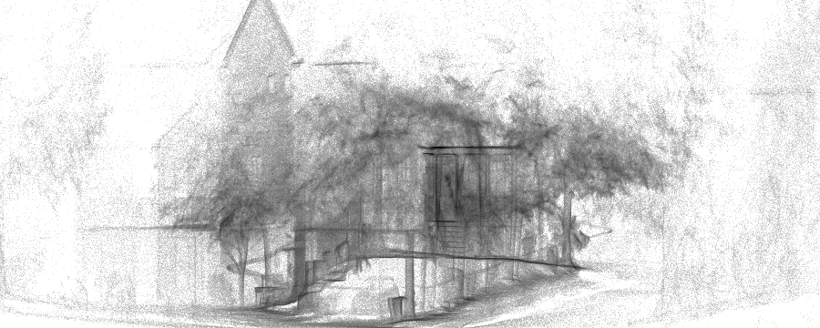
Y/Z density view
Raw XYZ extent
151.026 × 159.830 × 61.512
Core XYZ extent
45.667 × 41.165 × 10.477
XY inflation ratio
12.84×
Z inflation ratio
5.87×
Median XYZ
3.667, -0.954, -0.743
Interpretation
Use the density views to identify likely building coverage. Do not infer dimensions or registration from this report alone.